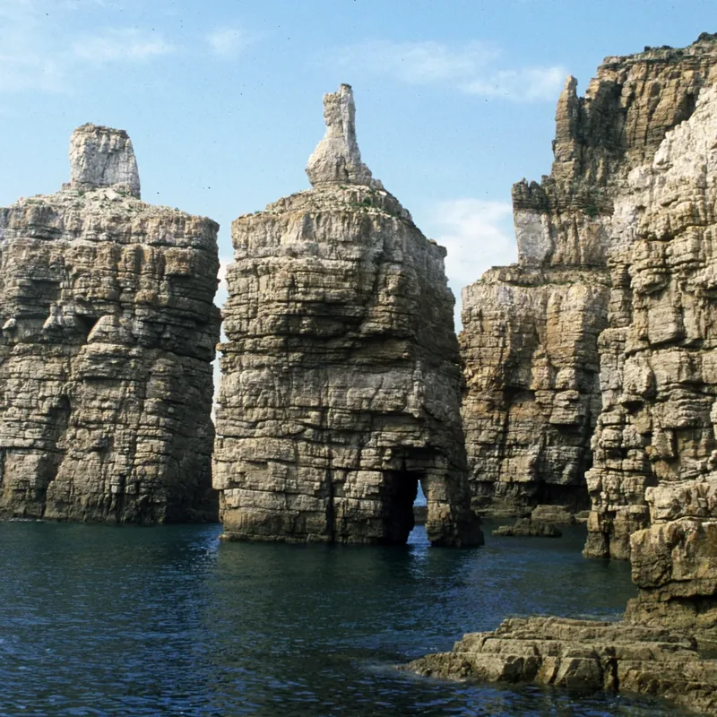
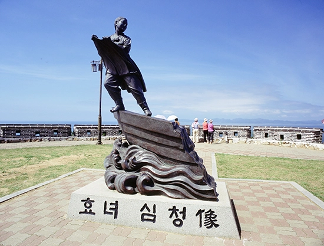

수려한 자연경관
두무진과 사곶해변, 콩돌해안까지. 서해를 대표하는 아름다운 자연을 사계절 내내 만나보세요.
백령면
푸른 바다와 기암절벽,
그리고 풍부한 생태를 간직한
백령면에서 특별한 하루를 경험하세요.
천혜의 자연환경과 다양한 문화가 공존하는 백령면,
때묻지 않은 자연 속에서 진정한 휴식을 느껴보세요.

두무진과 사곶해변, 콩돌해안까지. 서해를 대표하는 아름다운 자연을 사계절 내내 만나보세요.

점박이물범과 다양한 해양생물, 철새가 서식하는 청정 생태를 가까이에서 경험해보세요.

심청전 설화와 지역 문화가 살아있는 백령면만의 역사와 이야기를 직접 만나보세요.
출발지별 운항 시간과 예매 정보를
한곳에서 확인해 보세요.